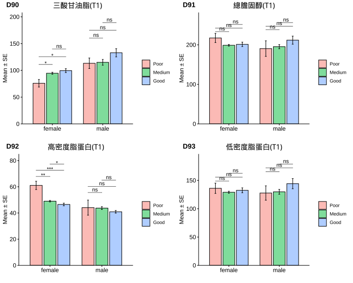

2.3 Results
2.3.1 Plots
We show a scatter plot in this section.  ### Tables We show the data in this tab. mpg cyl disp hp drat wt qsec vs am gear carb Mazda RX4 21.0 6 160 110 3.90 2.620 16.46 0 1 4 4 Mazda RX4 Wag 21.0 6 160 110 3.90 2.875 17.02 0 1 4 4 Datsun 710 22.8 4 108 93 3.85 2.320 18.61 1 1 4 1 Hornet 4 Drive 21.4 6 258 110 3.08 3.215 19.44 1 0 3 1 Hornet Sportabout 18.7 8 360 175 3.15 3.440 17.02 0 0 3 2 Valiant 18.1 6 225 105 2.76 3.460 20.22 1 0 3 1